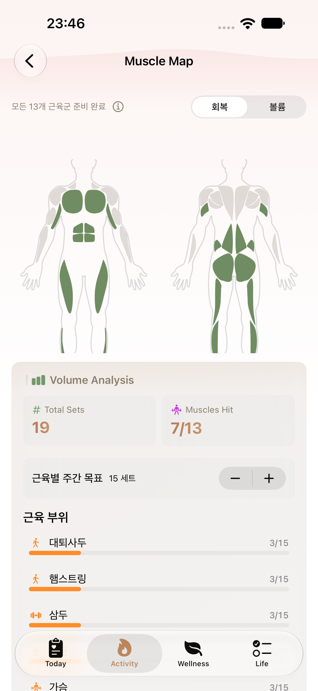
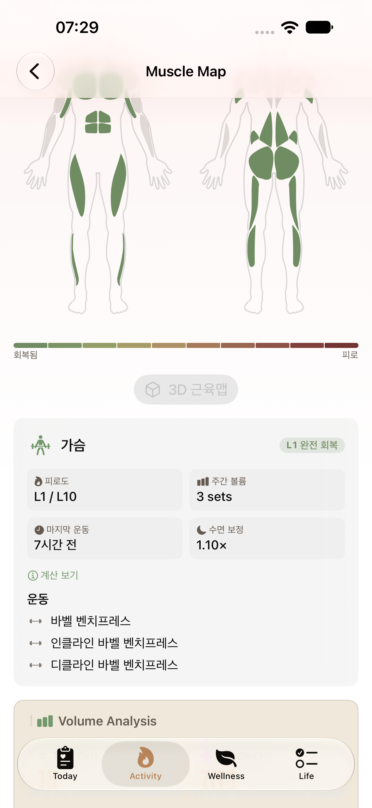
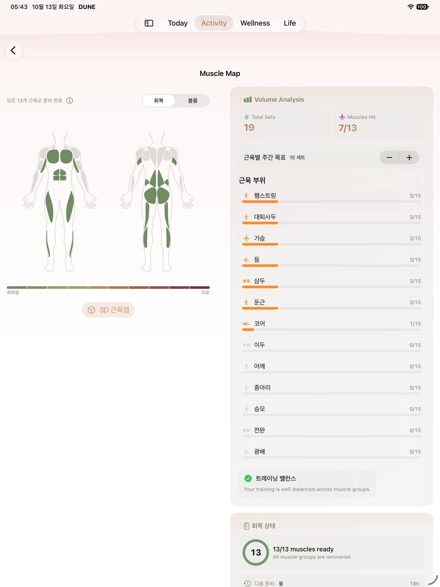
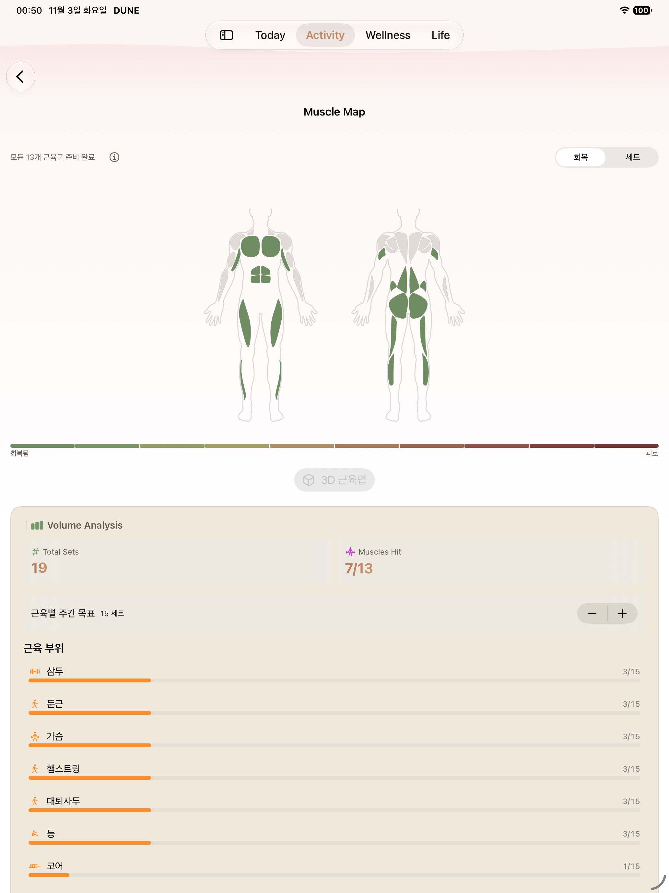
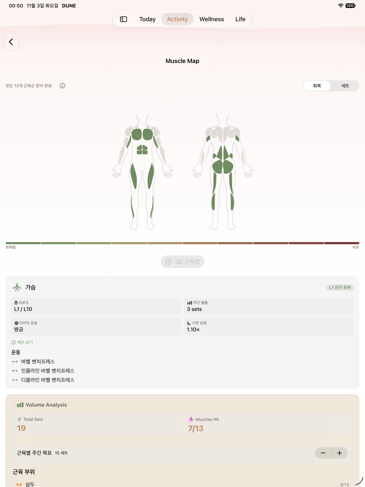
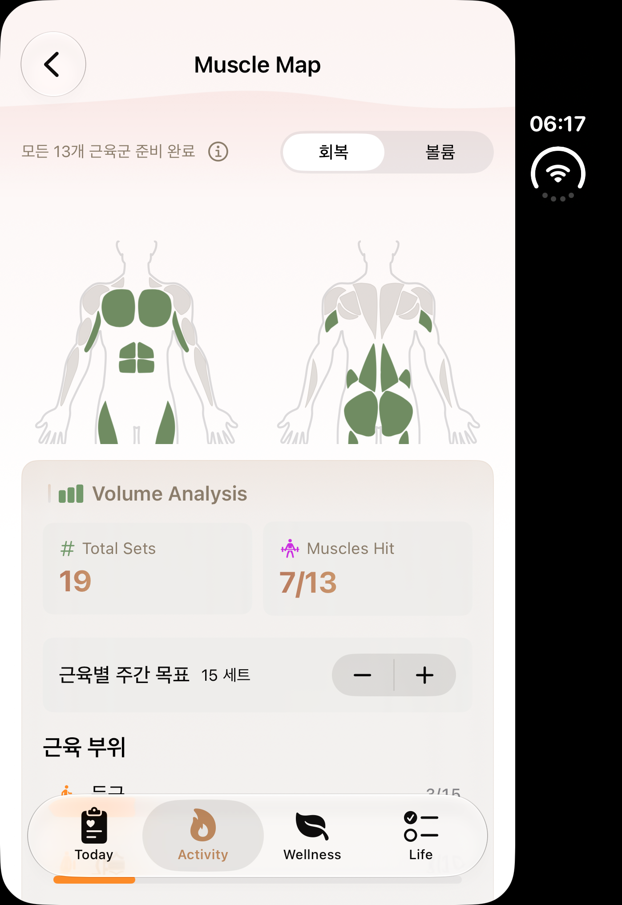
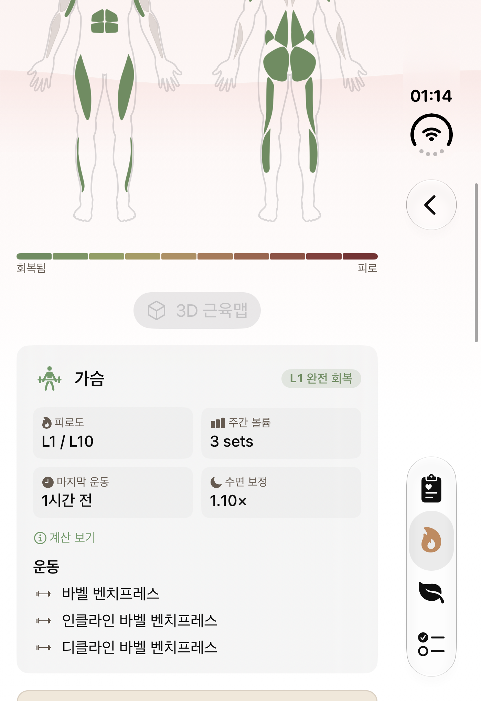
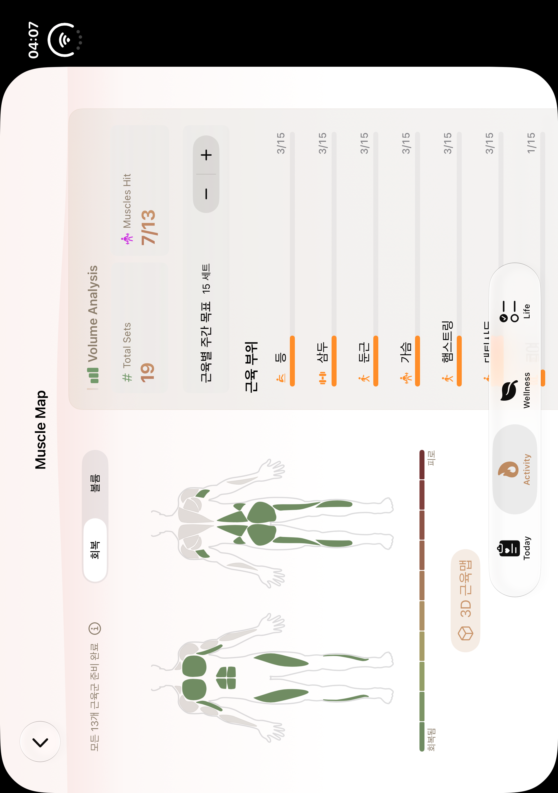
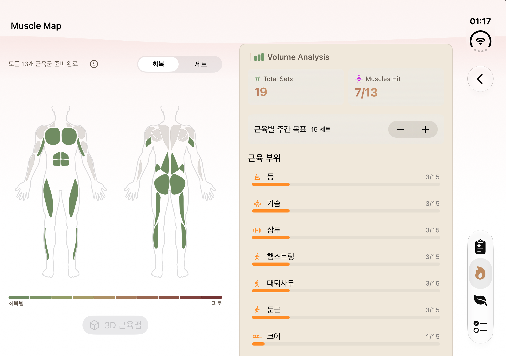
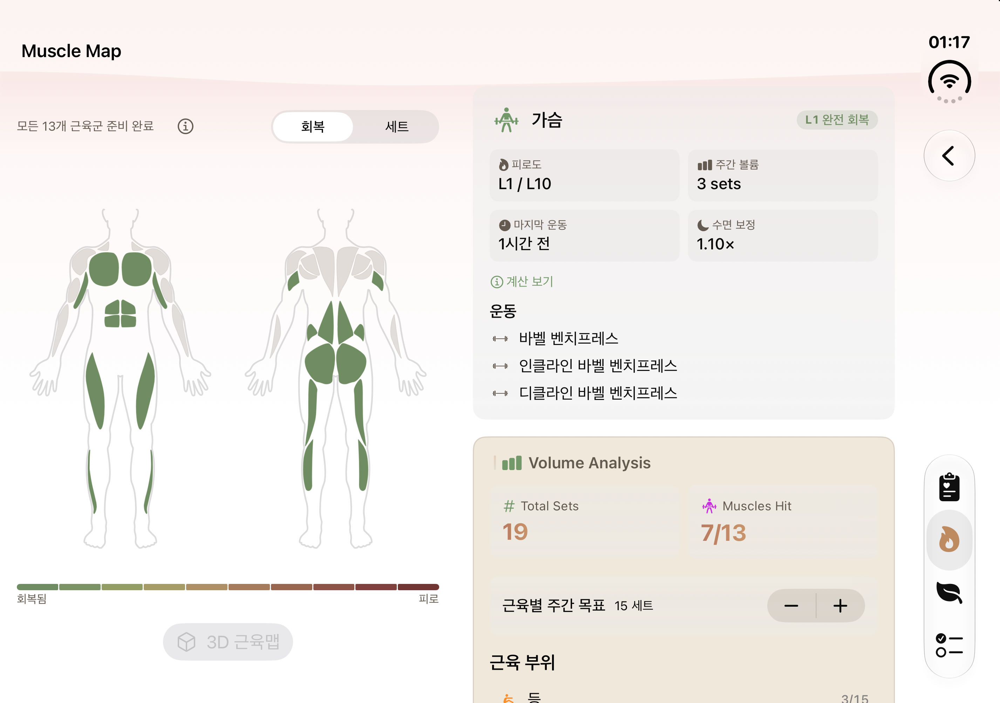

regular



Publication state: A04_INSTALLED_FOUR_ROWS — installed=true.
Historical before; actual default and selected. Duo open uses active LCD-1 host captures. No fresh 3D viewer test.










